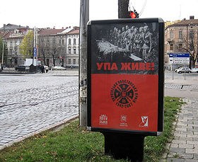

.(, )
(, )

́ ́ ́ (. 17 1978, ) , .
, . , . , , , . . ...

, , . , . , , , , . , , - , , , . , , , .
2008
1.
() () . . , , . , .
, , ...
, , ...
* * *
, 1990- . . . . , . , . , . . , ...
2. ѻ
. (), , . ? , .
I , ...
: ?
: , , , , , , , . , , .
; 1940 ...
ó , . , .[9...
(). , . (); . 3. : 1941
, , , . () , , . () .
...
. : - , , . . . , . ...
...
. : - , , . . . , . ...
* * *
, . () ( ) ͻ; , . ...
4. ()
1941 () . , . , () . 30 () . ()...
1943 , , , . , . , , . , - . , , . ...
* * *
1941 () . , , () . , , , . () ,... . . , , . , .
, ...
, ...
I. ӻ
II (), 1941 // i i, i i i 19291955 . . ., 1955. C. 2447; // ï . 30 ...
II.
1.
. , 2429 1945
. 2429 1945
, , 15 1913 , . 1933 , 12 . 21 42 1936 , 1933 , ...
.
. . 100. . 11. . 8. . 117137
202 , 19 1946
1940 , 4- () , 4- , .
, , , ...
. . 57. . 4. . 338. . 268279
202 , 19 1946 .
, 1916 , . , , , , 1935 , , -202.
: , -202. , [] ?
: ( ), 194419...
: . . -
()
. . 100. . 11. . 8. . 147148
4.
, 29 1945
. , , , , , . . 1938 ...
III.
1.
4- , 4 1943
.
.
. , . . 3.VIII.43.
ֻ, . -, , 18- .. , . -. ...
2 3 4 ()
4 1943 .
, 15 1944
1 .
.
.
, , , - . , . , .
, , .
...
3 ()
15 1944. . . . .
3.
, 17 1944
1- . ..
, , , . , , ,
12.8.44. . , . , , , ...
3- () 17 1944. . .
. . 100. . 11. . 8. . 3335
1- , 20 1944 .
ػ
2
4 .. ػ 74 1- , , :
, 1893 ; , 1910 ; , 1910 .;
, 190...
ػ - ()
20 1944
5.
1-
1- .
20 1944 .
12 .., , -, , , 6 : 50 , 28 , 7 10 . 79 5 . , , ...
. . 100. 11. . 8. .12
- .
-
-
-
() () () ()
-
- -
...
-
-
-
() () () ()
-
- -
...
I.
(). -7021. - , (), , . . 55. . ...
III.
. [. ] : . , 2006. . 1.i . : . , 1975.
....
.. : - . , 2007.
º ., . : (19201945). ï, 2006.
V.
.. ? // (). 15.02.2007... // 2000...
:
. , 1933 . 1917- . 1991- . , , ...
: : . ., 2001. . 233, 463; ...
2
.. : , 19411945. ., 2002. . 454.
3 . 1415.11.2007.
4.: . // (). 27.1 0.-2.11.2...
5
SWC urges Council of Europe to condem...
6
. 30 1941: i ï. ; -; , 1967. . 178.
7i . : . , 1975. . 264.
8 . ï i, iï , i i iï ...
9
i : , i i . , i, 1992. . : i . i ...
10
Turowski J., Siemiaszko W. Zbrodni...
11
, , . .: Rutkowska ., Stol...
12
Prus E. Holocaust po banderowsku: ...
13
, , () (.: P...
14
.. ï ï ï iiï...
15
. i i : i i iï . ...
16
.. : , 19411945. ., 2002. .220225.
17 .. I i: ï-i iï i ...
18
eer H. Blutige Ouvertüre: Lem...
19
Bol . Zloczow, Juli 1941: Die Wehr...
20
ii ï iii i ï i: ï...
21
. , 1941. . 13.
22 .: . : , , // 24 (). 27.02.200...
23
( 1941- 1943 .) // . 1991. 9; ...
24
.: . 1941 . // . 2007. 3.
25Motyka G. Ukraińska partzyant...
26
Berkhoff K.C., Carynnyk M. The Org...
27
Berkhoff K.C., Carynnyk M. The Org...
28
.. ï ï. . 179.
29 . ïi i ï iï i ...
30
I.K. i ï iii, 19411942: Ii ...
31
., .: . // ï . i, 200...
32
., . // ( ). 2005. 25. ....
33
. ? // (). 2005. 4; . //...
34
. : // REGNUM, 14.1...
35
. : . i, 2006. . : . ...
36
. . . 101.
37., .: . - : - // (), 23...
38
.: I.. ii () i Iiï i ...
39
ï . 30 1941: i i i ii / I &...
40
i ïi i i , 19421945 / I i i...
41
ii i i / ., . , . i. , 19831991...
42
i ii ii: Iii (), i iï, ...
43
., .: i ii ii: i ï i...
44
.: i ïi i i .442444, 448450.
45 : i ii, 19461948 / ., . i....
46
ï . 30 1941. . 77; . . 3833. . 1. . 12. . 10.
47 1941 i. . 1. . 261; . 2. . 453, ...
48
i ïi i i . . 1. .20821 0; ...
49
. . 1. .125126; º ., . : ....
50
"" 㳿 // SBU.gov.ua....
51
// RUpor.info, 06.02.2008.
52Berkhoff K.C., Carynnyk M. The Org...
53
, , . : . // (). 11.02....
54
.: . i iï iiï ii ...
55
iï. 1929. 12. . 2; . iiï . , 1968. . 93.
56 .. I i. . 149.
57 . . . 42.
58 . .4041
59 .. I i. . 77.
60 . . . 47.
61 .. I i. . 77.
62 . . 152.
63 . . 102.
64 .
65 .
66i . i ii iï // ï . i, 2004. . 3. . 11.
67ii ï iii i ï i: ï...
68
: . ., 1990. . 4. . 181; Helmuth...
69
. i ï- ii 19341945 . // ...
70
. i ï- ii 19341945 . // ...
71
. 1. . 339; . . 9. . 19. . 104116.
72 . 1. . 57; . . 16. . 33. . 63. . 2558.
73 . . 40.
74 . 91; . . 6. . 75170-. . 1. . 216225.
75 . 1. .9899; . . 6. . 75170-. . 1. . 236243.
76 . i 19401941 . // ï . i, 2004. . 3. . 163.
77 ii i i. . 1. .2933.
78 i i, i i i 19291955 . . ., ...
79
81
. . 3833. . 2. . 1. . 38; 1941 i. . 1. .103104.
80. . 3833. . 2. . 1. . 32; ï ....
82
. . 500. . 1. . 25. . 17.
83 1941 i. . 1. . 129; . . 3833. . 2. . 1. . 5776.
84 1941 i. . 1. . 131.
85 1941 i. . 1. . 138.
86 .
87 . . 139.
88 . . 143.
89 . . 145.
90 1941 i. . 1. . 147.
91 . . 150.
92 ., . 䳺 . .248249.
93 1941 i. . 1. . 152; . . 3833. . 2. . 1. . 5776.
94 .
95ï . 30 1941. .4146; 1941 ...
96
.. . . 220.
97 1941 i. . 1. . 216; . . 3833. . 2. . 7. . 19.
98 . . , 1997. .2122; Prus E. Holo...
99
. . 100. . 11. . 8. . 107108.
100 . . .2122; . 1941. 18 .
101ï . 30 1941. . 77; . . 3...
102
Berkhoff K.C., Carynnyk M. The ...
103
i . ï : i. . 43.
104 i . . 2. . 886; , 0192/336. . 29. . 21-21.
105 : i. . 1. . 249.
106 . i i . ï, 2000. . 52; . , 1941. . 12.
107ï . 30 1941. . 98.
108 . , 1941. . 13; 194...
109
. . 500. . 1. . 25. . 17.
110. . 166. . 3. . 246. . 80.
111ï . 30 1941. . 129; 19...
112
1941 i. . 1. . 197; . 2. . 48...
113
ï . 30 1941. . 151; . . ...
114
. . 57. . 4. . 370. . 18.
115 . // . 2005. 10.
116 . , 1941. . 13; (19411...
117
. . -7021. . 67. . 75. . 106106 .
118. . -7021. . 67. . 75. . 6464 .
119 . , 1941. . 13; Verbrechen de...
120
. i, , // , . , i, 2007. . 355.
121 : - , 5 1960 . ., 1960.
122 : - , 5 1960 . ., 1960.
123 . , 1941. . 13; Sandkuhler Th...
124
. , 1941. . 13; Verbrechen de...
125
: . ., 2005. . 634.
126Poliszczuk W. Dowody zbrodni OU...
127
ï . 30 1941. .189190; ...
128
ii i i. , 1991. . 3. . 53.
129 .. ï i ii ii . 1. .19219...
130
Bol . Zloczow, Juli 1941. S. 8.
131. . -7021. . 67. . 86. . 2223.
132Bol . Zloczow, Juli 1941. S. 7.
133Bol . Zloczow, Juli 1941. S. 10.
134. . 3833. . 1. . 57. . 17; I.K...
135
I. ii i 19401941 . // . 2000. 24.
136 .
137 .. . . 223.
138. . 1. . 23. . 928. . 5759; º ....
139
. . 100. 11. . 7. . 231234.
140 .
141 .. . . 223; .. // . , 1999. .2324.
142. . 57. . 4. . 370. . 3 .
143 .. . , 2007. . 62.
144 : i. . 1. . 426.
145ï . 30 1941. . 259.
146ï . 30 1941. . 282; . . ...
147
Motyka G. Ukraińska partzy...
148
: i. . 1. .578579.
149 1941 i. . 2. . 389; . . 3833. . 1. . 23. . 51.
150 1941 i. . 2. .465466; . . 383...
151
.. ï i ii ii . 1. . 253;...
152
Berkhoff K.C., Carynnyk M. The ...
153
. . -20944. . 1. . 27.
154. . 3833. . 1. . 6. . 6.
155 . . 3.
156 1941 i. . 2. . 453, 483; . . ...
157
ï . 30 1941. . 394.
158 1941 i. . 2. . 489, 491; . . ...
159
. . 493.
160 . . 100. . 11. . 7. . 4950.
161 1941 i. . 2. .528531, 547552;...
162
1941 i. . 2. . 565; . . 3833. . 1. . 22. . 1617.
163 - . ., 1946. . 173; .. ...
164
ii i i. . 3. . 96.
165 ii i i. . 3. . 95.
166 .. . . 224; 1942 i. . 88; ....
167
.. ï i ii ii . 2. .152153; 1942 i. . 60.
168 1942 i. . 86; . . 1. . 22. . 76. . 613.
169I i : , 19421946. ; i, 1995. ...
170
ï . 30 1941. . 450; . . ...
171
1942 i. . 97; . . 3833. . 1. . 42. . 64.
172 1942 i. . 100; . . 3833. . 1. . 63. . 16.
173 . . 103; . . 3833. . 1. . 63. ...
174
. . . 71.
175 i ïi i i . . 1. . 208; ...
176
. . 210.
177., .: 1942 i. . 103; . . 3833...
178
. 87; . 1. . 314; . . ...
179
i ïi i i . . 1. . 204; ...
180
i . i 1943 i // icc: i i. ...
181
. i 19411947 . // i Ï. 2003. 28. . 197.
182i .. i . . 221.
183 . 1. . 62; . . 62. . 1. . 1347. . 18.
184Prus E. Holokaust po banderowsku. S. 172173.
185 i ïi i i . . 2. . 894; ...
186
i ïi i i . . 2. .886888;...
187
.., .. - , 19411945. -, 1998. . 44.
188. : Prus E. Holokaust po banderowsku. S. 167.
189 i ïi i i . . 1. .448450;...
190
. . 97.
191 . 1. .321322; . . 65. . -9079. . 1. . 3049.
192 . . 324.
193 . . . 73.
194Motyka G. Ukraińska partzy...
195
. . 1. . 103; . . 62. . 1. . 253. . 2022.
196 . . 130; . . 1. . 22. . 75. . 4855.
197 i ïi i i . . 2. . 1032; ...
198
. . 100. 11. . 7. . 231234.
199 .
200Prus E. Holokaust po banderowsku. S. 182183.
201 . . 372. . 36. . 120124. .: ...
202
. ï i . 1. . 69.
203 . . 1. . 107; . . 62. . 1. . 1350. . 108.
204.: . . .7576.
205